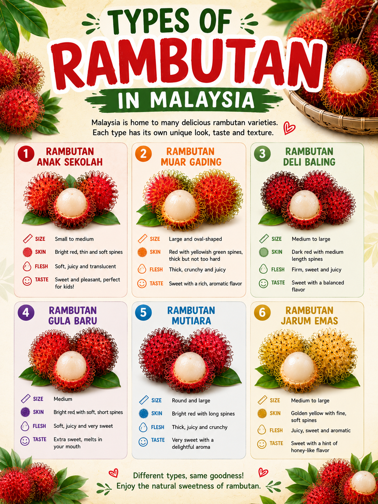
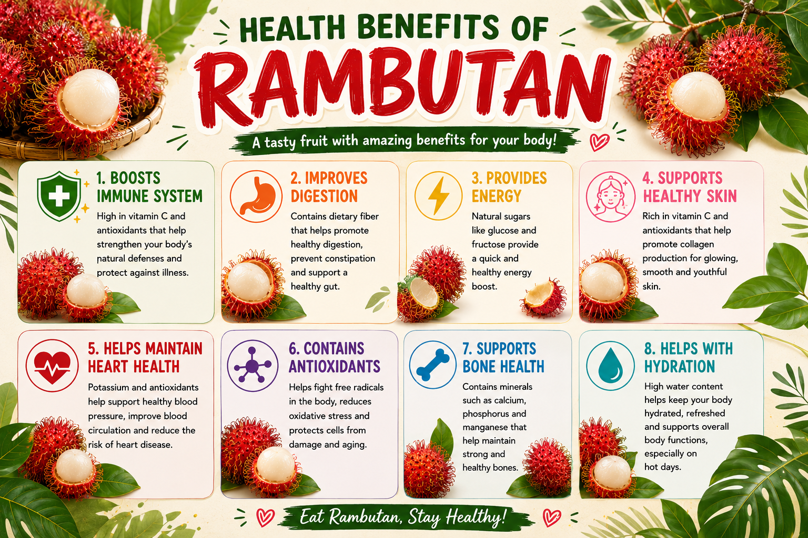

HISTORY
Rambutan is a tropical fruit that originated from Southeast Asia, especially the Malay Archipelago region, including areas of present-day Malaysia and Indonesia. The name “rambutan” comes from the Malay word “rambut”, meaning hair, because the fruit has soft, hair-like spines covering its skin.

TYPES OF RAMBUTAN
- Rambutan Anak Sekolah
- Rambutan Muar Gading
- Rambutan Deli Baling
- Rambutan Gula Batu
- Rambutan Mutiara
- Rambutan Jarum Emas
HEALTH BENEFITS
- Boosts Immune System – It helps the body fight infections and supports overall health.
- Improves Digestion – It can prevent constipation and support a healthy digestive system.
- Provides Energy – Rambutan contains natural sugars and carbohydrates that provide wuick energy for daily activities.
- Supports Healthy Skin – Help protect skin cells from damage.

HOW TO PLANT RAMBUTAN
Prepare the Seed
Extract the seed from the fruit and rinse off any pulp.
Prepare a small pot
Prepare a small pot with a well-draining mix (potting soil plus compost or perlite).
Plant the seed
Plant the seed 2-3cm deep, flat side down, and water gently so the soil stays consistently moist but not soggy.
Care for the Plant
Keep the pot in a warm spot around 30C (e.g., near a heater or sunny window) and avoid overwatering.
Results
Germination usually appears in 10-21 days; once the seedling is a few centimeters tall, transplant it outdoors in spring after the danger of frost has passed.
FUN FACTS
- Rambutan is a popular tropical fruit in Malaysia that grows well in hot and wet weather.
- It is native to Southeast Asia and is commonly found in countries like Malaysia, Indonesia, and Thailand.
- In Malaysia, rambutan is usually in season from June to August when the fruits are harvested in large amounts.